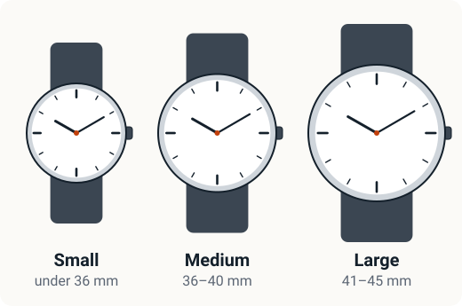

An analog watch, the kind with hands, still looks smart in an interview, at the office or at a wedding. It also makes a safe gift. Here's how to pick one without confusion.
1. Pick the right dial size
Dial (case) size is measured in millimetres (mm) across the watch face.
- Under 36 mm: small, common in women's watches.
- 36–40 mm: medium. Suits most wrists, men or women.
- 41–45 mm: large and bold. Looks best on wider wrists.
Not sure? Choose 38–40 mm for men and 28–34 mm for women. These sizes suit most people.

2. Choose a strap for how you'll wear it
- Leather: classic and formal. Keep it away from water and sweat or it wears out faster.
- Stainless steel or metal: durable, easy to clean and good for office wear. Links can be removed at a watch shop to fit your wrist.
- Silicone or rubber: sporty, light and sweat-friendly. Good for daily college wear and the gym.
3. Understand water resistance
This confuses many buyers. The number on the watch is not a diving depth.
- 30 m: handles splashes, rain and hand washing. Not for swimming or bathing.
- 50 m: a bit more protection, but still not for swimming.
- 100 m or more: suitable for swimming.
Most everyday watches are rated 30 m. That's fine as long as you take the watch off before a shower or a swim.
4. Quartz or automatic?
- Quartz watches run on a battery. They're very accurate, low-maintenance and affordable. A battery lasts about 2–3 years and is cheap to replace.
- Automatic watches wind themselves from your wrist movement. They're loved by watch fans but cost more and need servicing.
For a first watch, quartz is the sensible choice.
5. Check the brand and warranty
Well-known brands in India, such as Titan, Fastrack, Sonata, Timex and Casio, have service centres in many cities. Look for at least a 1-year warranty. Some, like Casio, offer 2 years on some models.
Our picks for men
Classic formal watch for office and functions:
Smart casual watch for jeans or formals:
Bold dial with a date window and a 2-year warranty:
Our picks for women
Elegant everyday watch, also a great gift:
A simple watch for anyone
Minimal black design that suits men and women:
Compare our picks
| Product | Case size | Strap | Water resistance | Warranty | |
|---|---|---|---|---|---|
| Titan Karishma Black Dial Men's Watch, Steel Strap | 38 mm | Stainless steel | 30 m | 2 years | Check pricePaid link |
| Timex Classics Blue Dial Men's Watch, Tan Leather Strap | 39.7 mm | Leather | 30 m | 1 year | Check pricePaid link |
| Casio MTP-VD01GL Black Dial Men's Watch, Leather Strap | 45 mm | Leather | 50 m | 2 years | Check pricePaid link |
| Titan Karishma Champagne Dial Women's Watch | 25 mm | Metal | 30 m | 2 years | Check pricePaid link |
| Fastrack Minimal Black Analog Watch (Unisex) | Not listed | Silicone | 30 m | 6 months | Check pricePaid link |
Gift-buying tips
- If you don't know their wrist size, a metal strap is easiest because a shop can resize it.
- A medium dial (36–40 mm) is the safest size for men.
- Keep the box and invoice for the warranty.
Looking for more present ideas? See our New Year gift ideas and wedding gift guide. Not in a hurry? See what to expect from Amazon's Republic Day sale.